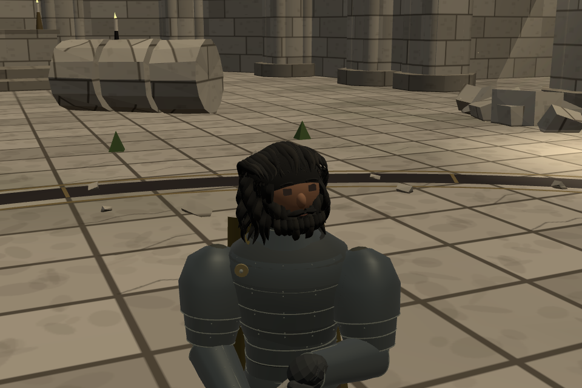

올리비에
롤랑의 오랜 벗이자 오른팔. 짙은 피부와 풍성한 검은 수염, 곱슬 중단발. 투구를 벗고 먹빛 갑옷과 차분한 황토빛 망토를 입었습니다.

실제 게임 화면 · 카메라를 가까이 옮겨 촬영투구와 갑옷의 변화
눈은 앞선 버전에서 높이 10mm로 작아져 있었습니다. 기본 크기인 15mm로 복원했습니다. 투구를 벗으면서 머리의 투구 방어도도 제거했습니다.
롤랑과 백린의 전사
모델 관찰 화면은 실제 게임 모델을 같은 조명과 자세로 촬영했습니다. 대성당은 외형 검토용 대련장입니다. 검토판 저장은 기존 게임과 분리됩니다.